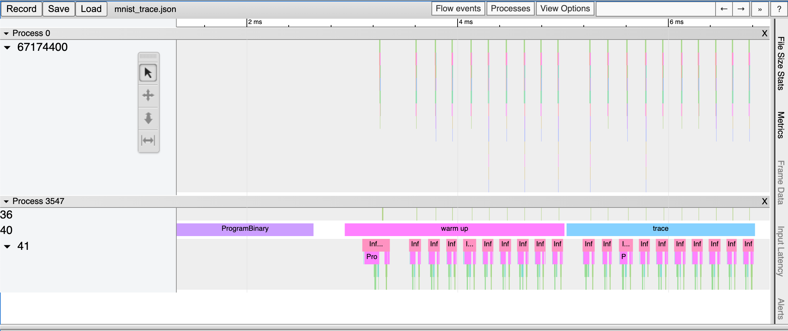

Performance profiling
Low latency and high throughput performance are critical factors in many DNN applications. For performance optimization, model developers and ML engineers must understand the model performance and be able to analyze bottlenecks. To assist developers with this process, Furiosa SDK provides a profiling tool.
Trace Analysis
Trace analysis provides structured data on execution time by step, by actually executing model inference task. You can also visualize the data using the Trace Event Profiling Tool function of the Chrome web browser.
Though small, trace generation generates temporal overheads as it measures time for each step and writes the results to a file. It is thus not enabled by default. You can create trace by using one of the following methods.
Enabling trace generation through environment variables
You can enable trace generation by setting the path of the file to which the trace result will be written in FURIOSA_PROFILER_OUTPUT_PATH. The advantage of this method is that the code remains unchanged. The downside is that you cannot set a specific section or category for measurement.
git clone https://github.com/furiosa-ai/furiosa-sdk
cd furiosa-sdk/examples/inferences
export FURIOSA_PROFILER_OUTPUT_PATH=`pwd`/tracing.json
./image_classify.py ../assets/images/car.jpg
ls -l ./tracing.json
-rw-r--r--@ 1 furiosa furiosa 605054 Jun 15 02:02 tracing.json
If you enable trace generation through environment variables as described above, a JSON file will be written to the path specified by the environment variable FURIOSA_PROFILER_OUTPUT_PATH.
If you enter chrome://tracing in Chrome’s address bar, the trace viewer will start. Click the Load button in the upper left corner of the trace viewer, and select the saved file (tracing.json in the example above) to view the trace result.

Enabling trace generation through profiler context
You can also trace a model inference performance by using a Profiler Context in your Python code. The advantages of this method, in comparison to the tracing by environment variable, are as follows:
Allow to enable trace immediately even in interactive environments, such as Python Interpreter or Jupyter Notebook
Allow to specify labels to certain inference runs
Allow to measure specified operator categories selectively
from furiosa.runtime import session, tensor
from furiosa.runtime.profiler import profile
# You can find 'examples' directory of the root of furiosa-sdk source tree
model_path = "examples/assets/quantized_models/MNISTnet_uint8_quant_without_softmax.tflite"
with open("mnist_trace.json", "w") as output:
with profile(file=output) as profiler:
with session.create(model_path) as sess:
input_shape = sess.input(0)
with profiler.record("warm up") as record:
for _ in range(0, 10):
sess.run(tensor.rand(input_shape))
with profiler.record("trace") as record:
for _ in range(0, 10):
sess.run(tensor.rand(input_shape))
The above is a code example using a profiling context. Once the above Python code is executed, the mnist_trace.json file is created. The trace results are labelled ‘warm up’ and ‘trace’ as shown below.
{kind=link}
Trace analysis using Pandas DataFrame
With the measured tracing data, in addition to visualizing it with Chrome Trace Format, it can also be expressed and used in Pandas DataFrame, commonly used for data analysis. These are the advantages in comparison to Chrome Trace Format.
Can be used directly in Python Interpreter or Jupyter Notebook interactive shell
Users can directly access DataFrame for analysis, on top of the reporting function which is provided as default
from furiosa.runtime import session, tensor
from furiosa.runtime.profiler import RecordFormat, profile
# You can find 'examples' directory of the root of furiosa-sdk source tree
model_path = "examples/assets/quantized_models/MNISTnet_uint8_quant_without_softmax.tflite"
with profile(format=RecordFormat.PandasDataFrame) as profiler:
with session.create(model_path) as sess:
input_shape = sess.input(0)
with profiler.record("warm up") as record:
for _ in range(0, 2):
sess.run(tensor.rand(input_shape))
with profiler.record("trace") as record:
for _ in range(0, 2):
sess.run(tensor.rand(input_shape))
profiler.print_summary() # (1)
profiler.print_inferences() # (2)
profiler.print_npu_executions() # (3)
profiler.print_npu_operators() # (4)
profiler.print_external_operators() # (5)
df = profiler.get_pandas_dataframe() # (6)
print(df[df["name"] == "trace"][["trace_id", "name", "thread.id", "dur"]])
Above is a code example that designates a profiling context format into PandasDataFrame.
When (1) line is executed, the following summary of the results is produced.
================================================
Inference Results Summary
================================================
Inference counts : 4
Min latency (ns) : 258540
Max latency (ns) : 650018
Mean latency (ns) : 386095
Median latency (ns) : 317912
90.0 percentile latency (ns) : 564572
95.0 percentile latency (ns) : 607295
97.0 percentile latency (ns) : 624384
99.0 percentile latency (ns) : 641473
99.9 percentile latency (ns) : 649163
When (2) line is executed, duration of one inference query is shown.
trace_id span_id thread.id dur
40 daf4d8ed300bc4f93901a978111b44f9 d5ac7df24cfd0408 45 650018
81 02e6fb6504e6f7a1312272077a2ca480 313be2a0fb70dc4f 45 365199
124 713e7a122436acbeeafd1339499a7bed f4402ab5ea873f46 45 258540
173 7e754c14f342d3eb3f4efbc615d15d8a 4f67a754e72e2211 45 270625
When (3) line is executed, elapsed times of NPU executions will be shown:
trace_id span_id pe_index execution_index NPU Total NPU Run NPU IoWait
0 e3917c06e01d136ddb98299da74748d8 1b99d7c6574c1c29 0 0 10902 8559 2343
1 a867049bb2db14e62cebe3dc18546923 f5cd3ba0d885fab4 0 0 10901 8557 2344
2 05bfa81f1579ac8089ac75588f36a747 e7e847b44ce11d28 0 0 10997 8557 2440
3 438df7d9beb7fb8c60daaeffbb2c7e76 d2c20e3d9daf21be 0 0 10900 8555 2345
When (4) line is executed, elapsed times of operators will be shown:
average elapsed(ns) count
name
LowLevelConv2d 1226.187500 16
LowLevelDepthwiseConv2d 757.333333 12
LowLevelPad 361.416667 12
LowLevelMask 116.500000 8
LowLevelExpand 3.000000 8
LowLevelReshape 3.000000 68
LowLevelSlice 3.000000 8
When (5) line is executed, the time data for operators in the CPU is shown as below.
trace_id span_id thread.id name operator_index dur
2 daf4d8ed300bc4f93901a978111b44f9 704e2c8ece98e29e 45 Quantize 0 42929
3 daf4d8ed300bc4f93901a978111b44f9 4a304c8c46be707a 45 Lower 1 72999
34 daf4d8ed300bc4f93901a978111b44f9 cff0f3268f26423d 45 Unlower 2 31812
36 daf4d8ed300bc4f93901a978111b44f9 b3a90233e6eb90f8 45 Dequantize 3 4895
54 02e6fb6504e6f7a1312272077a2ca480 920c7170893cb202 45 Quantize 0 14085
55 02e6fb6504e6f7a1312272077a2ca480 b2508624adaf01a1 45 Lower 1 32360
75 02e6fb6504e6f7a1312272077a2ca480 ed6fc23c0a7cc81e 45 Unlower 2 15655
78 02e6fb6504e6f7a1312272077a2ca480 e2d61265a1fe0ad6 45 Dequantize 3 6128
96 713e7a122436acbeeafd1339499a7bed 20473c3a26d91593 45 Quantize 0 4400
100 713e7a122436acbeeafd1339499a7bed f71676c0868f1a34 45 Lower 1 28714
118 713e7a122436acbeeafd1339499a7bed dff936584542ee83 45 Unlower 2 12675
121 713e7a122436acbeeafd1339499a7bed 9d2eaf76f1a6d156 45 Dequantize 3 12227
138 7e754c14f342d3eb3f4efbc615d15d8a 0df3b383e59e5322 45 Quantize 0 6631
142 7e754c14f342d3eb3f4efbc615d15d8a c15504b489f56503 45 Lower 1 11694
170 7e754c14f342d3eb3f4efbc615d15d8a cb8f9199904c6065 45 Unlower 2 17573
171 7e754c14f342d3eb3f4efbc615d15d8a 90c1af4de00eebc2 45 Dequantize 3 16021
With line (6), you can access DataFrame from the code and perform direct analysis.
trace_id name thread.id dur
150 ec3dd3d28baf03adc6a1ddd5efe319bc trace 44 778887